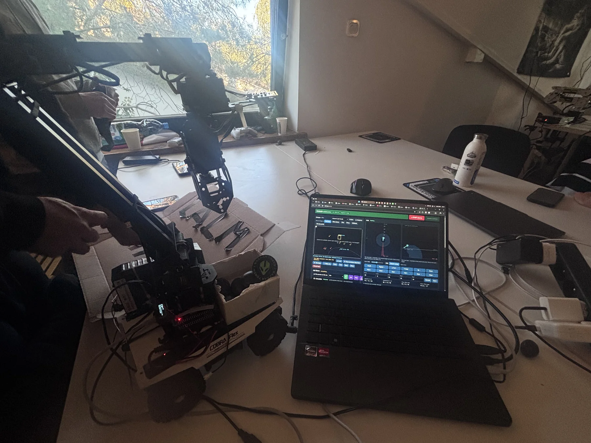

Built during Alien Bazaar, a three-day hardware hackathon in Warsaw. Our four-person team combined a mobile rover, robotic arm and depth camera to find household objects, pick them up and carry them in the rover’s container.

The integrated rover, robotic arm and control dashboard during testing at Alien Bazaar.
Arm, vision & rover software25–27 September 2026Hacker Bloc · Warsaw
30 Hz arm controlOpen-vocabulary detection28 simulated-hardware tests
The original idea was simple: clear loose items from a table without telling the robot exactly what each object would look like. The hardware available at the event was a Waveshare WAVE ROVER, a RoArm-M3 arm and an OAK-D camera, so we rebuilt the plan around those parts and joined them through a central Python control hub.
I focused on the arm, vision and rover software. The final system combined plain-English object detection, lightweight tracking, camera-to-arm calibration, visual servoing and a browser dashboard for monitoring and control. The work was shared through the team repository so everyone could build and test against the same system.
Development process
01
One control hub
I built a central Python application to coordinate the arm over USB, the rover over Wi-Fi, the cameras and the vision model. A live web dashboard exposed the system state and provided teleoperation, click-to-go reach maps and a preview before planned actions ran.
02
Vision that could find new objects
Qwen2.5-VL-72B ran on a cloud NVIDIA GPU through Brev and vLLM, allowing the robot to search for objects described in ordinary language without training a new detector. I corrected the coordinate scaling used when the model resized an image, then used a lightweight OpenCV tracker to keep the object locked between model calls.
03
Safe, responsive arm control
The first request-and-response controller felt too slow, so I replaced it with a 30 Hz streaming engine with smooth acceleration and a dead-man timeout. When unreachable targets made the arm move unpredictably, I traced the problem to a missing inverse-kinematics failure check in the firmware. I ported the arm’s inverse and forward kinematics and joint limits to Python, verified the results against the firmware and reach-checked every pose before sending it.
04
Calibration and autonomous collection
A clicked-point homography mapped camera coordinates into the arm’s workspace, with the table height acting as a safety floor. The gripper camera then fine-tuned the final approach through visual servoing. Wrist-roll logic turned long or oval objects so the gripper approached across their shorter side. These parts came together in a collect mode that could identify, pick and drop items into the rover’s container.
05
Rover integration and robustness
The rover connected through automatic network discovery. After it tipped over during testing, I added smoother acceleration and braking plus a browser-direct fallback. A global stop latch, impossible-servo-reading checks, automatic USB-port detection and duplicate-hub protection made failures easier to catch. The simulated-hardware suite grew to roughly 28 automated tests.
06
The weekend
We ate, slept and built in the same venue for three days. The project changed repeatedly as hardware behaved differently from the plan, but that was the most useful part: debugging under pressure, sharing work with a new team and turning a collection of unfamiliar parts into one working system.
The live dashboard, object tracking and integrated robot running together during an object-collection test.Open video directly ↗The rover-mounted RoArm-M3 manipulating an object during bench testing.Open video directly ↗
Technologies & tools
PythonOpenCVQwen2.5-VLvLLMOAK-DRoArm-M3WAVE ROVERVisual ServoingInverse KinematicsWi-Fi & Serial Control